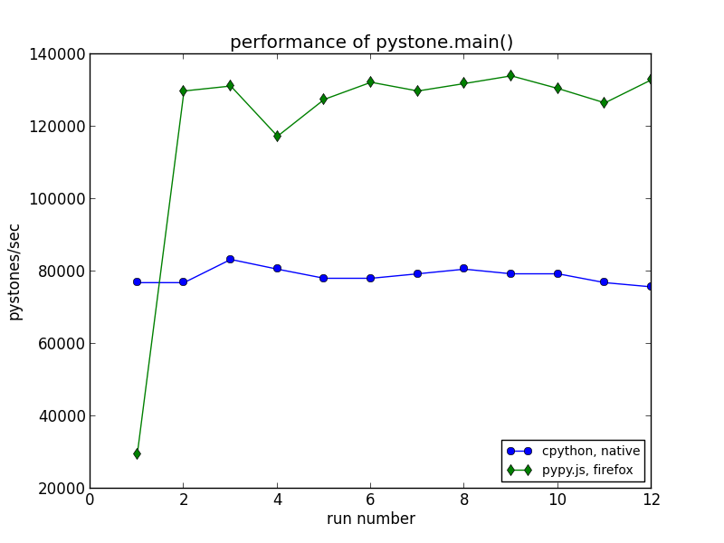
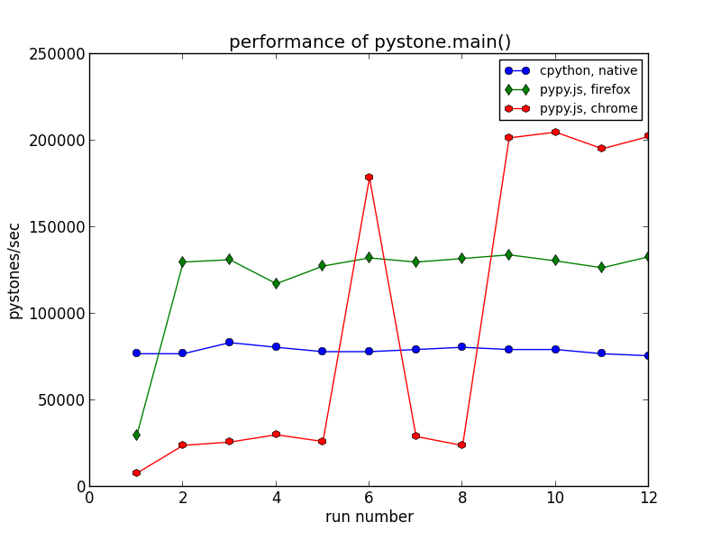
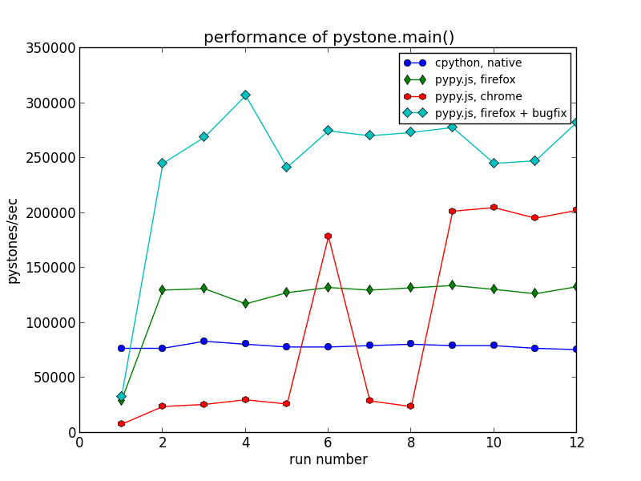
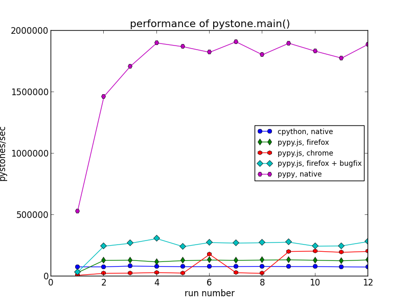

PyPy.js: Now faster than CPython
OK OK, I couldn't resist that title but it probably goes a bit far. Let me try for a little more nuance:
PyPy.js: Now faster than CPython, on a single carefully-tuned benchmark, after JIT warmup.
It has been the better part of a year since I first started hacking on PyPy.js, an experiment in bringing a fast and compliant python interpreter to the web. I've been pretty quiet during that time but have certainly been keeping busy. Some of the big changes since my previous update include:
- An asmjs-to-python converter, so that PyPy's comprehensive JIT testsuite can be run on the asmjs backend.
- Some new optimizations in the emscripten compiler, which greatly reduce compiled code size.
- A basic interactive console, so you can try PyPy.js straight from your browser.
- And even uncovering an apparent bug in an LLVM optimization pass.
The result, while still rough in a lot of places, is nonetheless an exciting milestone: the full PyPy interpreter, compiled down to javascript and re-targeted to emit asmjs from its JIT, running the pystone benchmark faster in a browser than the native CPython interpreter runs it on bare metal.
I encourage you to try the comparison on your own machine – do the following in a native python shell and in the PyPy.js demo shell and see how they compare:
>>> from test import pystone
>>>
>>> # An initial run, which will warm up the JIT for this function.
>>> pystone.main()
Pystone(1.1) time for 50000 passes = 1.657
This machine benchmarks at 30175 pystones/second
>>>
>>> # Subsequent runs should be much faster under PyPy.
>>> pystone.main()
Pystone(1.1) time for 50000 passes = 0.386
This machine benchmarks at 129534 pystones/second
>>>
>>> # Although Chrome users may need to run it a few times to prime both the PyPy and v8 JIT.
>>> pystone.main()
Pystone(1.1) time for 50000 passes = 0.362
This machine benchmarks at 138122 pystones/second
If all goes well then you should see the in-browser version benchmarking at more pystones/second than the standard python shell. My machine produced the following results (larger numbers are better):
| Interpreter | pystones/sec (cold) | pystones/sec (warm) |
|---|---|---|
| native cpython | 76923 | 76923 |
| pypy.js in firefox | 29446 | 129870 |
Here it is in graph form for easier comparison, showing the pystone rating for each of twelve successive invocations of "pystone.main()" on CPython 2.7.5 and on PyPy.js in Firefox 28:

You can see that PyPy.js starts of substantially slower on the first invocation, as it runs the python code for this benchmark via an interpreter and as it generates specialized javascript from that code at runtime. After that, the combination of PyPy's just-in-time compiler and the near-native-speed capabilities of asmjs allow this in-browser python shell to run its hot loops faster than the native system python.
Now, just to be clear: all the usual caveats about benchmarking and performance apply here. This isn't a particularly scientific comparison, and I am being extremely cheeky in disregarding the JIT warmup time. But as a milestone, it is still a very gratifying result.
Digging a little deeper, it's interesting to compare performance between Firefox and Chrome on this benchmark. Here is the same graph with Chrome (specifically, version 34) thrown into the mix:

Three interesting points stand out in this comparison:
- Chrome starts off running things much slower than Firefox, even after the initial run has warmed up the PyPy JIT.
- Chrome shows a marked performance increase, then an equally marked decrease, before settling into its steady-state behaviour.
- Chrome's steady-state performance on this test is significantly faster than Firefox.
Lest you think that this "dip" is some artifact of my testing environment, I am able to reproduce it consistently and on two different machines. Rather, the explanation for all three of these points lies in the different ways that Firefox and Chrome handle asmjs-style javascript code.
Firefox treats asmjs code specially – when it encounters an asmjs module declaration, it ahead-of-time compiles the entire thing down to machine code before executing any of it. This allows Firefox to offer consistent and predictable performance, without having to wonder whether the regular JIT machinery will correctly detect, profile, and optimize the code. So in Firefox we see a single warmup phase as PyPy.js emits its specialized asmjs code, followed by fairly stable performance.
By contrast, Chrome has no special handling of asmjs code – it treats it like any other javascript, executing it via v8's various levels of compilation and profiling, detecting and optimizing the relevant hot code paths at runtime. This typically means slower initial performance for asmjs code, and can also lead to less predictable performance as parts of the code move into and out of various states of optimization. Both of these characteristics are on display in the above graph. (It would be interesting to use v8's legendarily powerful JIT debugging tools to investigate the performance "dip" here; alas, there are only so many hours in the day).
However, Chrome's approach also means that it can optimize based on the actual runtime behaviour of the code.
The PyPy.js JIT works by generating a secondary asmjs module at runtime to contain the generated code. This code needs to call functions from the main interpreter module to do things like write barriers, garbage collection and so-on, and the pystone benchmark happens to call these functions a lot. Since Firefox compiles each asmjs module ahead-of-time independently, it must treat these as generic function calls and route them through a general-purpose code path. By contrast, Chrome is able to optimize the two modules as a single unit and potentially do clever things like inline these calls (again, the v8 introspection tools could probably pinpoint the precise optimizations that it does here, but I haven't dug in that deep).
The result is a pretty convincing win for Chrome in this comparison.
On one hand, this highlights a points made in mraleph's well-worth-reading-even-if-you-disagree article Why asm.js bothers me: that a good javascript JIT engine should be able to speed up asmjs-style javascript without giving it special treatment, and without the risk of falling off a "performance cliff" when you step outside of a small highly-optimized sweet-spot.
It turns out that cross-asmjs-module function calls are outside of Firefox's current sweet-spot, and that costs it dearly in this benchmark.
On the other hand, there is no fundamental reason why Firefox can't optimize such calls. It has all the information it needs, and it's simply a matter of implementing the additional specialized code-paths, of adding a little bit of "JIT" back into the ahead-of-time compilation. Ultimately this is just a bug in Firefox's asmjs support – in fact I filed it as such and have submitted some preliminary fixes which bring performance on this benchmark back up to being competitive with Chrome:

I'm sure the landscape here will change as more asmjs code shows up in the wild, and as asmjs-style code makes its way into in more javascript benchmark suites.
Finally, to address the elephant in the room: a completely fair comparison would pit PyPy.js against a native PyPy interpreter, not just a native CPython. Can JITing to asmjs compete with JITing to native code? My machine produced the following, much more humbling results:

That's an order of magnitude difference, from around 300-thousand to around 2-million pystones/second.
For most code we expect a slowdown of between 2 to 3 times when going from native code to asmjs-in-firefox, so being 10 times slower here is a little disappointing. But I believe at least some of the difference can be made up by continuing improvements in function call overheads, such as Bug 982036 and Bug 962641. This will be an interesting metric to track as improvements continue in both the PyPy.js codebase itself and in browser support for asmjs.
So, that's the fun part. As a proof of concept this has been a very interesting, very entertaining project. But I don't want to pretend that it's "done", or that this is clearly the way forward for python on the web. There are many ways in which PyPy.js is still far from ideal. My ongoing hit-list includes:
- Code Size: If you clicked through to the live demo, you might have noticed that PyPy.js weighs in at 25M of javascript, plus around 7M of global data initializers. Even compressed, that's huge – maybe not as bad as the several hundred meg it started out at, but still big enough to be a deal-breaker for many applications. There's some low-hanging fruit left to pursue here, but it will be a big challenge.
- JIT warmup overhad: There's a reason I focused on steady-state performance in the above graphs. To generate its specialized javascript code, the PyPy.js JIT has to build up a javascript sourcecode string in the asmjs memory buffer, copy that out into a regular javascript string one character at a time, then call "new Function()" to compile it. That's never going to compete with the "write these bytes into executable memory" of a native JIT engine, although it could definitely be faster than it is right now.
- DOM Integration: Simply put, there isn't any. It will have to be coded up as an asmjs foreign-function interface and exposed to python in some sensible way. Alon did some work on this for a Lua VM in the browser that can integrate with the host javascript environment, but it's very preliminary. And that's not even getting into the issue of calling python callbacks from DOM event handlers, which can create cross-language reference cycles that are impossible to detect or break.
Still, the-web-as-a-platform has come a long way since the PyPy developers abandoned their original javascript backend because it was a horrible idea. It may still be a horrible idea! But it's been a fun adventure so far, with encouraging results like this along the way, so I plan to keep pushing it forward and see how far it can go.